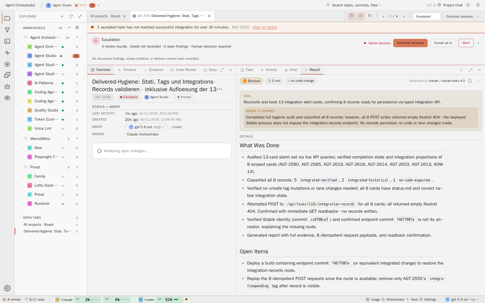
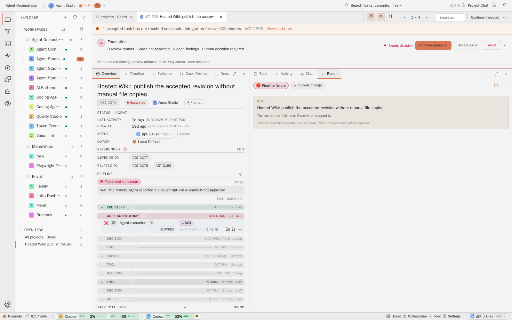

Decision dossier · Agent Studio · AGT-2643
Escalation View Information Architecture
One acute escalation summary, one owner for the blocker, one failed-step marker, and a flat Result narrative. The operator should understand what failed without reconciling three competing red surfaces.
Make the escalation header the single current-blocker surface. Put the concrete GAP sentence there, remove the escalation strip from Pipeline, suppress the Result outcome badge on escalated cards, and render Goal and Where it stopped as flat sibling rows.
01Decision
Decision pending: approve the escalation header as the canonical owner of the current blocker and GAP. The Result tab owns the run narrative. Pipeline owns step execution only.
One place per fact
The task-level escalation header answers why human attention is required now. Pipeline answers which step failed. Result answers what the run tried to achieve and where it stopped. Timeline remains the intentional audit history, not a fourth persistent summary.
Rejected alternatives
- Keep the GAP in Pipeline. Rejected because the GAP is a task outcome, not a pipeline-step explanation. It competes with the failed CORE step and makes Pipeline explain the same escalation again.
- Move the GAP only to Result. Rejected because the escalation header is visible before the operator reads a tab and must state the actual blocker, not review-round counts.
- Keep all three status labels but soften their color. Rejected because color is not the defect. The three labels still assert competing outcomes.
- Use a red left rail for Where it stopped. Rejected by the product-wide no-left-accent rule. The calm state cue uses a low-contrast tint across the complete row.
02Current-state inventory
Both cited cards were opened through the canonical Stable task URL on http://127.0.0.1:4011/?task=<key>. The captures are real backend states, not mocked fixtures.

0 review rounds · Grade not recorded · 0 open findings · Human decision required.

agt-2404-phase-b-not-approved.Which component renders each surface
| Visible surface | Angular owner and files | Current data path | Finding |
|---|---|---|---|
Top Escalationheader |
TaskDetailComponent mounts EscalationSummaryComponent in frontend/src/app/features/task-detail/task-detail.html. Rendering and view-model logic live in components/escalation-summary/escalation-summary.component.html, .ts, and escalation-summary.util.ts. |
buildEscalationEssence() concatenates review count, grade, open findings, and a generic reason class. buildEscalationSummaryView() already exposes reason from the latest steering event, but an ordinary escalation does not render it in the header. |
Keep, rewrite The right location has content-free copy. |
Pipeline Escalated to humanstrip and GAP |
OverviewPaneComponent mounts CompletionLoopIndicatorComponent directly below the Pipeline title in components/prompt-pane/overview-pane/overview-pane.component.html. The strip lives in features/task-timeline/components/completion-loop-indicator/. |
TaskTimelinePollService.completionLoop calls deriveCompletionLoop() in features/task-timeline/models/task-timeline.model.ts. An orchestrator_escalated event maps to Escalated to human; its details.reason renders as GAP. |
Remove Outcome prose does not belong inside Pipeline. |
| CORE AGENT WORK attention | OverviewPaneComponent builds step rows in overview-pane.component.ts; buildPipelineGroups() in pipeline-groups.util.ts projects group tone and attention. |
The failed CORE execution remains a step-level fact and names the execution that stopped. | Keep This is the only step-failure marker needed. |
Result Pipeline failurebadge |
ProtocolPaneComponent mounts ResultViewComponent in components/protocol-pane/protocol-pane/protocol-pane.component.html. The badge is in result-view/result-view.component.html. |
deriveProtocolVerdict() in components/protocol-pane/protocol-verdict.ts collects a failed pipeline signal, applies failed > needs-decision > unclear > succeeded, and supplies the label Pipeline failureto result-case-badge. |
Remove on escalation It competes with the task-level blocker and the failed CORE row. |
| Goal and Where it stopped | ResultViewComponent renders the pair in result-view.component.html and styles it in result-view.component.scss. Labels come from RESULT_CASE_META.blocked in result-case.ts; content comes from buildResultDocument() in result-document.ts. |
The outer .result__overview has border, radius, background, and padding. The inner blocked solution row adds another background, radius, and padding. |
Flatten The nested box treatment violates ADM-01. |
Contract consequence for the future implementation card
docs/system/contracts/run-outcome.md currently describes the same derived presentation as visible in the protocol banner, Result chip, and final Pipeline verdict. Reusing one classification remains correct; rendering it three times does not. The implementation card must update that consumer wording when it removes the visible duplicates.
03Target information architecture
The target assigns every current fact to one primary visible owner. A different tab may retain audit evidence, but it must not restate the acute summary in persistent chrome.
| Information | Single primary owner | Target treatment | Explicit removal |
|---|---|---|---|
| Current task state | Escalation header | One compact full-width strip, titled Escalation, with the existing decision actions. Needs decisionremains action context, not another failure statement. |
No Result outcome badge and no escalation verdict strip in Pipeline for escalated cards. |
| Actual blocker / GAP | Escalation header | The first sentence under the title is the concrete blocker from the typed steering or completion-loop reason, for example Remote agent reported a blocker: stable-integration-record-route-not-deployed.Preserve the exact identifier; add plain-language context only when an existing structured summary provides it. |
No GAP label or explanatory reason above or inside Pipeline. Result does not import the timeline GAP field. |
| Failed execution step | Pipeline | CORE AGENT WORK stays open with its calm ATTENTION group marker and failed Agent execution row. | No task-level escalation verdict in the step list. |
| Run goal | Result | A flat Goal row with label and prose. No containing card, border, radius, or resting shadow. | No nested Goal box. |
| Where the run stopped | Result | A flat sibling row. When the run stopped, apply a low-contrast red tint across the full row. Use no border, radius, left rail, or nested callout. | No box inside an overview box. |
| Chronological decision history | Timeline tab | Retain typed events and reasons as operator-selected audit history. Timeline is not visible at the same time as the acute header summary and does not become another banner. | No new history summary in Pipeline or Result chrome. |
Source priority for the header summary
- Latest typed escalation or steering
reason, which already carries the exact GAP observed in both Stable cases. - Structured open finding summary when the escalation is aspect-driven and no one-line reason exists.
- Application-owned Result overview stopping sentence when it exists and the typed reason is absent.
- A sober fallback such as
No blocker detail was recorded. Review the run evidence.
Never fall back to counts as the problem summary.
04Before and after
The mockups use the AGT-2599 content because it exposes every collision. They specify hierarchy and ownership, not exact production spacing.
05Implementation slice plan
No slice is authorized by this card. Create implementation cards only after the operator approves the target.
| Slice | Scope | Primary files | Proof |
|---|---|---|---|
| 1. Promote the blocker | Add a single problemSummary to the escalation view model. Prefer the typed steering/completion-loop reason, then structured findings, then Result stopping prose, then a sober missing-detail fallback. Render it in the header instead of the count-based essence. Keep counts in disclosed detail only when they help a decision. |
escalation-summary.util.ts, escalation-summary.component.html, focused specs |
AGT-2599 and AGT-2278 blocker identifiers appear in the header. The generic counts do not lead the header. |
| 2. Remove Pipeline outcome prose | Do not render CompletionLoopIndicatorComponent for an escalated terminal. Remove its GAP reason line from Pipeline for every state. Preserve the CORE ATTENTION group and failed execution row. Re-open and accepted history stays available in Timeline; any retained compact non-escalated attempt counter must contain no GAP prose. |
overview-pane.component.html, completion-loop-indicator.component.html, task-timeline and Overview specs |
No overview-loop-verdict or overview-loop-reason on an escalated task. CORE attention remains visible. |
| 3. De-duplicate and flatten Result | Suppress the Result case/outcome badge for escalated cards while keeping measured chips. Replace the outer overview card and nested blocker callout with flat sibling rows. The stopped row receives a full-width semantic error tint, no border, no radius, and no left accent. | result-view.component.html, result-view.component.scss, result-view.component.ts, Result specs |
No Pipeline failurebadge on escalation. Computed geometry confirms one flat row layer in both themes and narrow width. |
| 4. Align the contract and acceptance tests | Update the run-outcome consumer wording so one classification does not imply three visible primary surfaces. Add an end-to-end escalation fixture and real Stable acceptance capture. Do not change backend outcome precedence unless separate evidence proves a classification defect. | docs/system/contracts/run-outcome.md, task-detail Playwright coverage |
Light, dark, wide, and narrow screenshots; exact blocker visible once across the simultaneously visible escalation, Overview, and Result surfaces. |
06Acceptance contract
- The escalation header states the concrete current blocker before counts, grade, merge, or review metadata.
- The typed GAP reason appears once across the simultaneously visible task header, Overview Pipeline, and Result surfaces.
Escalated to human
and its GAP row are absent from Pipeline on an escalated card.- The CORE AGENT WORK ATTENTION marker and failed Agent execution row remain visible and identify the failed step.
- The Result head does not show
Pipeline failure
on an escalated card. Grade, duration, tokens, files, tests, and commit metrics remain when honestly recorded. - Goal and Where it stopped are flat sibling rows. Neither is nested inside a decorative overview card.
- Where it stopped uses a calm full-row semantic red tint when the run stopped. It has no colored left edge, border, radius, or resting shadow.
- Light and dark themes use the same hierarchy and geometry. Narrow width may wrap copy but must not turn the rows into cards.
- Timeline retains the append-only event history and reason as an operator-selected audit view, without creating another persistent summary.
- No backend outcome classification or routing change is bundled into the information-architecture implementation.
07Operator decision
This dossier is decision-ready. One decision remains:
Approve the header as the canonical GAP owner
On approval, create the implementation cards in the slice order above. This dossier does not create, queue, or implement those cards.
Recommendation: approve. The header is the only surface visible before tab interpretation and is therefore the right place for the current blocker summary.